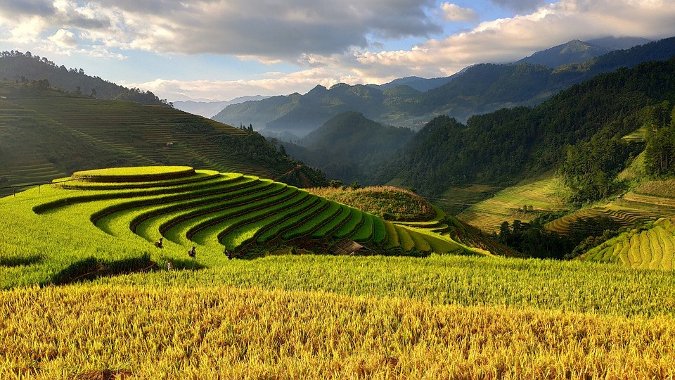
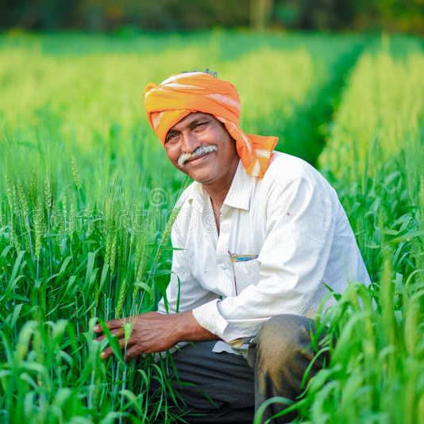
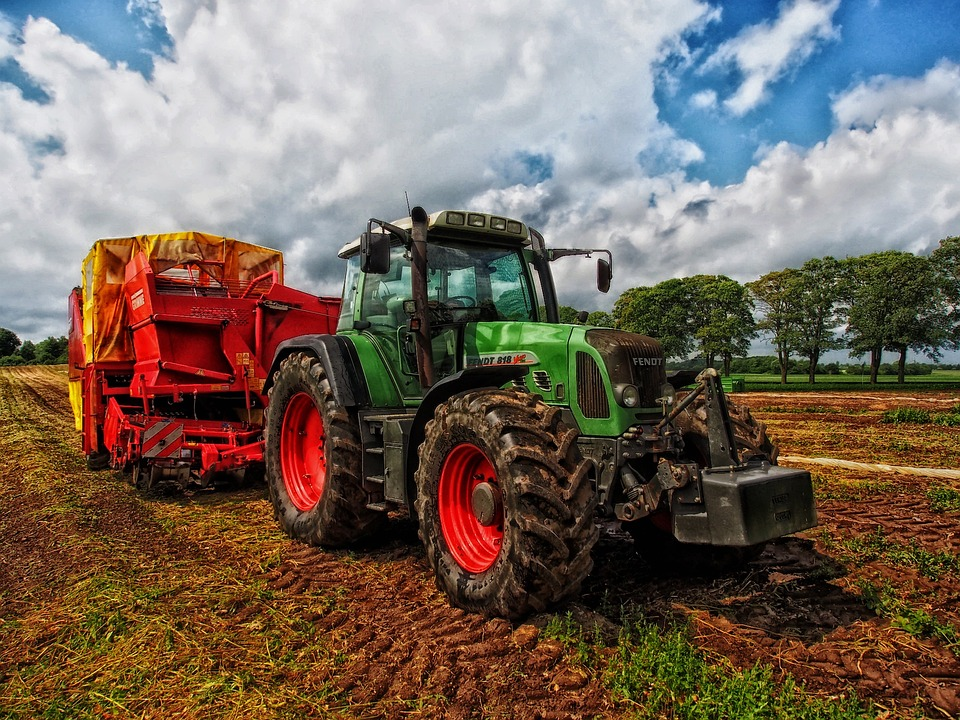

Sort by: top 
Prof. R K Nema
Dean | College of Ag. Engineering | Jabalpur (M. P.)
2 hours ago
Today's agriculture routinely uses sophisticated technologies such as robots, temperature and
moisture sensors, aerial images, and GPS technology. These advanced devices and precision
agriculture and robotic systems allow businesses to be more profitable, efficient, safer, and more
environmentally friendly.

Vikrant Chauhan
Student | G. B. Pant University of Agriculture | Pantnagar (UttaraKhand)
2 days ago
Terrace farming works well in hilly areas. Terrace farming is the act of building steps or terraces
on mountain slopes to carry out farming activities. Terrace cultivation is practiced in Punjab,
Meghalaya, Haryana, Uttar Pradesh Plains, Himachal Pradesh, and Uttaranchal in India.


Rameshwar Patidar
Farmer | Maheshwar (M. P.)
3 days ago
A haulm topper is an agricultural machine that cuts potato stems (haulms) before potatoes are
harvested. It is like a flail mower but has the profile of the potato drills. Modern potato farmers
often mount a haulm topper on the front of the tractor and have a trailed potato harvester towed
behind the tractor.

Aakash Rajput
GramSevak | Rural Agriculture Extension Officer | Khandwa (M. P.)
8 hours ago
Normally the apples are ready for harvest from September-October except in the Nilgiris where the
season is from April to July. The fruits mature within 130-150 days after the full bloom stage
depending upon the variety grown.

 Photo
Photo Video
Video Event
Event

 Jay Bharti and 75 others
Jay Bharti and 75 others
 Like
Like
 Comment
Comment
 Share
Share
 Send
Send